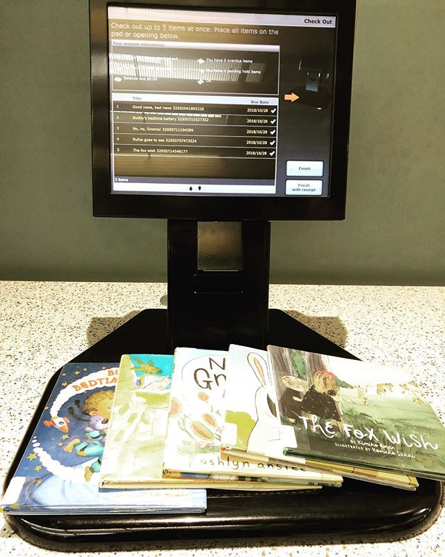

渥太华的图书馆只要有地址证明就可以办图书卡，不要钱，小孩也可以办，每周都有活动，小孩可以做手工画画可以玩一天。管理员会一起教小孩借书还书，相当亲切。图书馆网站可以借电子版，可以预订实体书，有人会送到你最近的分馆，管理员会帮你挑好书贴上你的名字放在专门的书柜上。借书还书都全电子自助，每本书通过 NFC 标贴管理。书不限数量，不限延期，直到有其他人需要这本书。图书馆甚至有平板电脑，MP3 和蓝光盘，游戏盘作为多媒体资料借用。😄之前朋友还去借过博物馆的门票…… — view on Instagram http://bit.ly/2PbC3r6